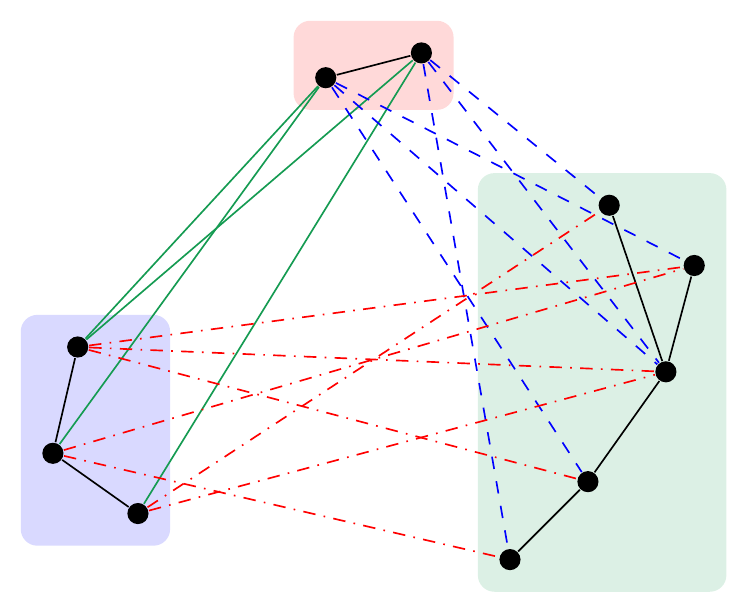
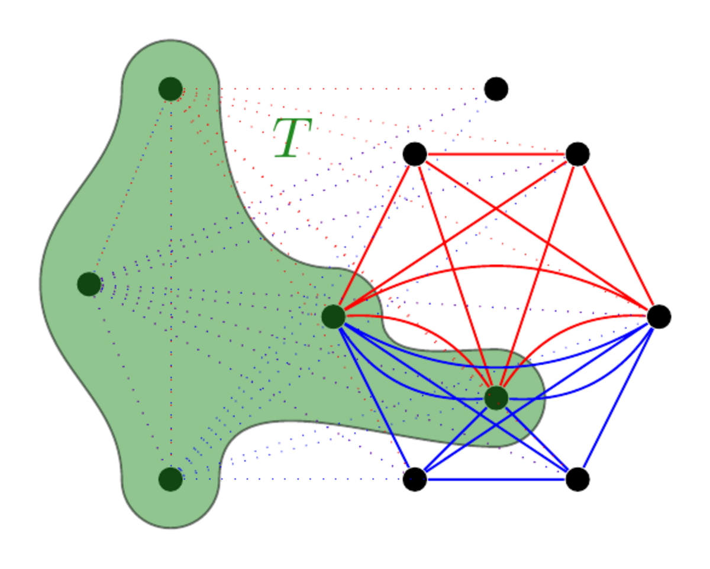
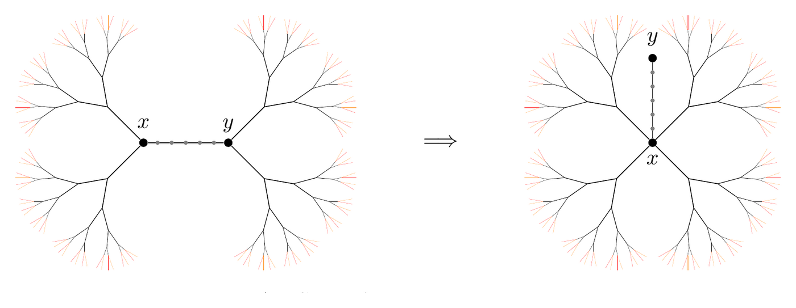

Extremal and probabilistic aspects of graph rigidity
Graph rigidity asks when a network of joints connected by fixed-length bars is unable to deform. In recent work with Michael Krivelevich and Alan Lew, I study how combinatorial structure—including connectivity, minimum degree, expansion and randomness—forces rigidity.

Related papers
Ramsey theory for large structures
Ramsey theory asks which large monochromatic structures must appear in every colouring. Discrepancy makes this question quantitative: rather than asking only whether a monochromatic structure exists, it measures how far from balanced the colour profile of a large structure can be forced. My work develops these questions for Hamilton cycles, spanning trees and matchings, together with robust and transference versions for sparse or incomplete hosts.

Related papers
Discrepancy
-
Color-biased Hamilton cycles in random graphs
RSA (2022) -
Discrepancies of spanning trees and Hamilton cycles
JCTB (2022) -
Oriented discrepancy of Hamilton cycles
JGT (2023) -
Discrepancies of subtrees
CTW 2023
Ramsey theory for matchings
-
Defect and transference versions of the Alon-Frankl-Lovász theorem
CPC (2026) -
A generalised Ramsey-Turán problem for matchings
preprint (2025) -
A very robust Ramsey theorem for matchings
preprint (2026)
Random walks, trees, and processes
Random walks and local processes build global graph structure through a sequence of small random choices. I study the subgraphs traced by random walks, the geometry and enumeration of random spanning trees, and random greedy processes through local limits. Across these strands, the aim is to understand how local randomness shapes global structure.

Related papers
Random walks
-
On the trace of random walks on random graphs
PLMS (2018) -
Small subgraphs in the trace of a random walk
E-JC (2017)
Random trees
-
The diameter of uniform spanning trees in high dimensions
PTRF (2021) -
Spanning trees at the connectivity threshold
SIDMA (2022)